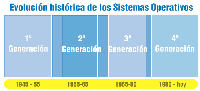

El hardware y el software de los sistemas informáticos han evolucionado de forma paralela y
conjunta en las últimas décadas. Por lo que la evolución que vamos a ver de los sistemas
operativos está estrechamente relacionada con los avances en la arquitectura de los
ordenadores que se produjo de cada generación.

Primera generación (1945-1955)
Los primeros ordenadores estaban construidos con tubos de vacío. En un principio no existían
sistemas operativos, se programaba directamente sobre el hardware. Los programas estaban
hechos directamente en código máquina y el control de las funciones básicas se realiza
mediante paneles enchufables.
Hacia finales de 1950 aparecen las tarjetas perforadas que sustituyen los paneles
enchufables. Las tarjetas perforadas supusieron un enorme paso ya que permitían codificar
instrucciones de un programa y los datos en una cartulina con puntos que podía interpretar
el ordenador. La mayoría de los programas usaban rutinas de E/S y un programa cargador
(automatizaba la carga de programas ejecutables en la máquina). Esto constituía una forma
rudimentaria de sistema operativo.
2ª Generación (1955-1965)
Esta generación se caracteriza por la aparición de los transistores que
permitieron la construcción de ordenadores más pequeños y potentes. La programación se
realizaba en lenguaje ensamblador y en FORTRAN sobre tarjetas perforadas. Otro aspecto
importante de esta generación es el procesamiento por lotes, en el cual
mientras el sistema operativo está ejecutando un proceso, este último dispone de todos los
recursos hasta su finalización. La preparación de los trabajos se realiza a través de un
lenguaje de control de trabajos conocido como JCL. El sistema operativo residía en memoria y tenía un programa de
control que interpretaba las tarjetas de control, escritas JCL. Dependiendo del contenido de
la tarjeta de control el sistema operativo realizaba una acción determinada. Este programa
de control es un antecedente de los modernos intérpretes de órdenes.
Procesamiento Fuera de línea (Offline)
Como mejora del procesamiento por lotes surgió el procesamiento fuera de línea
(off-line), en el cual las operaciones de carga de datos y salida de resultados
de un proceso podían realizarse de forma externa y sin afectar al tiempo que el procesador
dedicaba a los procesos. A esto ayudó la aparición de las cintas magnéticas y las impresoras
de líneas. Ejemplos de sistemas operativos de la época son FMS (Fortran Monitor
System) y IBSYS.

3ª Generación (1965-1980)
La aparición de los circuitos integrados (CI) supuso una mejora consiguiendo un
menor tamaño y relación precio/rendimiento respecto de las máquinas de generaciones
anteriores. En relación con los sistemas operativos, la característica principal de esta
generación fue el desarrollo de la multiprogramación y los sistemas
compartidos. En los sistemas multiprogramados se cargan varios programas en
memoria simultáneamente y se alterna su ejecución. Esto maximiza la utilización del
procesador. Como evolución de aparecen los sistemas de tiempo compartido donde el tiempo del
procesador se comparte entre programas de varios usuarios pudiendo ser programas
interactivos. Algunos de los sistemas operativos de esta generación son
OS/360, CTSS, MULTICS y
UNIX.
4ª Generación (1980-hasta hoy)
En esta generación se producen grandes avances en la industria hardware como la creación de
los circuitos LSI (integrados a gran escala). También aparecen los
ordenadores personales, entre finales de la anterior generación y principios de la presente.
Ejemplos de sistemas operativos de los primeros ordenadores personales son
MS-DOS, desarrollado por Microsoft, Inc., para el IBM PC y
MacOS de Apple Computer, Inc. Steve Jobs, cofundador de
Apple, apostó por la primera interfaz gráfica basada en ventanas, iconos, menús y
ratón a partir de una investigación realizada por Xerox. Siguiendo esta
filosofía aparecería MS Windows. Durante los 90 apareció
Linux a partir del núcleo desarrollado por Linus Torvalds. Los sistemas
operativos evolucionan hacia sistemas interactivos con una interfaz cada vez más amigable al
usuario. Los sistemas Windows han ido evolucionando, con diferentes versiones tanto para
escritorio como para servidor (Windows 3.x, 98, 2000, XP, Vista, 7, Windows Server
2003, 2008, etc), al igual que lo han hecho Linux (con multitud de
distribuciones, Ubuntu, Debian, RedHat, Mandrake, etc) y los sistemas Mac (Mac OS 8,
OS 9, OS X, Mac OS X 10.6 "Snow Leopard", entre otros).
Un avance importante fue el desarrollo de redes de ordenadores a mediados de
los años 80 que ejecutan sistemas operativos en red y sistemas
operativos distribuidos. En un sistema operativo en red los usuarios tienen
conocimiento de la existencia de múltiples ordenadores y pueden acceder a máquinas remotas y
copiar archivos de un ordenador a otro. En un sistema distribuido los usuarios no saben
donde se están ejecutando sus programas o dónde están ubicados sus programas, ya que los
recursos de procesamiento, memoria y datos están distribuidos entre los ordenadores de la
red, pero todo esto es transparente al usuario.
Actualmente, existen sistemas operativos integrados, para una gran
diversidad de dispositivos electrónicos, tales como, teléfonos móviles, PDAs (Personal Digital
Assistant, Asistente Digital Personal u ordenador de bolsillo), otros dispositivos de
comunicaciones e informática y electrodomésticos. Ejemplos de este tipo de sistemas
operativos son PalmOS, WindowsCE, Android OS, etc. Haremos
una referencia especial al último, Android OS, se trata de un sistema operativo basado en
Linux. Fue diseñado en un principio para dispositivos móviles, tales como teléfonos
inteligentes y tablets, pero actualmente se encuentra en desarrollo para su aplicación
también en netbooks y PCs.


.")

![La figura muestra el funcionamiento de la memoria virtual con segmentación paginada. Ésta consiste en paginar los segmentos. Así la entrada en la tabla de segmentos no contiene la dirección de la base del segmento, sino la dirección de la base de una tabla de páginas para ese segmento. El desplazamiento del segmento se fragmenta entonces en un número de página y un desplazamiento de página. El número de página indexa en la tabla de páginas para dar el número de marco. Finalmente, el número de marco se combina con el desplazamiento de página para formar la dirección física en memoria real.](https://educacionadistancia.juntadeandalucia.es/formacionprofesional/pluginfile.php/16675/mod_scorm/content/0/SI02_CONT_R42_memoriavirt.gif "Funcionamiento de la Memoria virtual con segmentación paginada.")


![La figura se encuadra dento de la gestión de la E/S y muestra el funcionamiento de una unidad de disco. La unidad de disco tiene dos partes intercomunicadas: un controlador, que se encarga de la comunicación con la CPU y un dispositivo electromecánico. La primera, la controladora IDE, recibe/envía las señales de control, los datos de E/S, las direcciones y, además, contiene una unidad de DMA -Acceso Directo a Memoria-, un módulo de codificación/decodificación y otro de lógica de control de motores). La segunda parte de la unidad de disco contiene el dispositivo electromecánico: los platos de disco, el motor de disco y las cabezas de lectura/escritura.](https://educacionadistancia.juntadeandalucia.es/formacionprofesional/pluginfile.php/16675/mod_scorm/content/0/SI02_CONT_R47_e-s-disco.png "Gestión de la E/S - Funcionamiento de una unidad de disco")


{kind=link}
{kind=link}
{kind=link}
{kind=link}
{kind=link}
{kind=link}
{kind=link}
{kind=link}
{kind=link}
{kind=link}